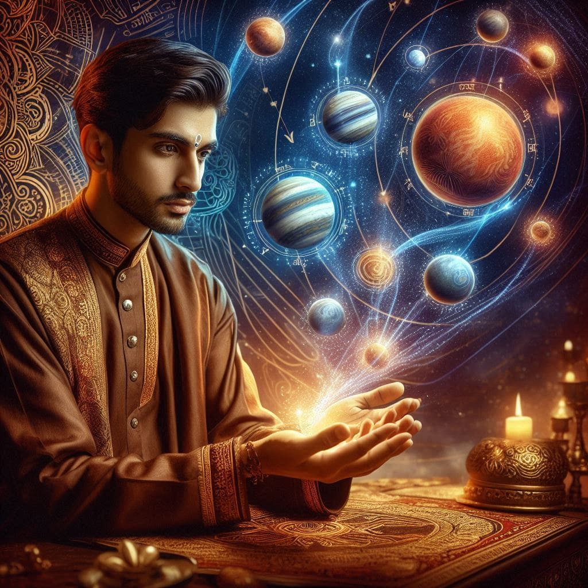
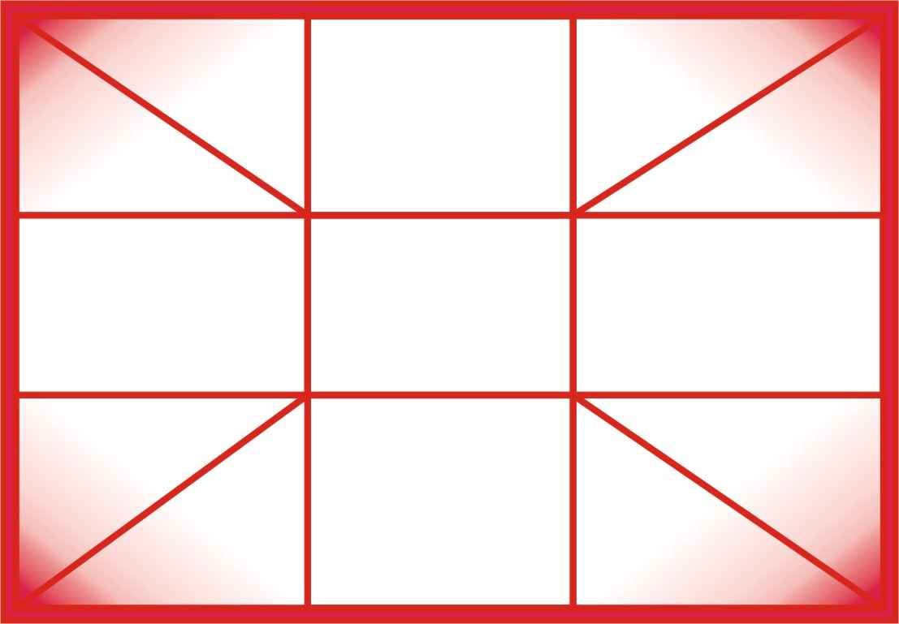
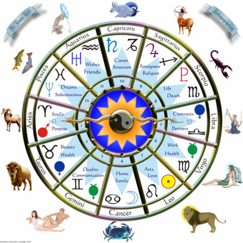

ভারতের বিশ্বস্ত বৈদিক জ্যোতিষী ও হস্তরেখাবিদ
ড. প্রদ্যুৎ আচার্য — রাণাঘাট, পশ্চিমবঙ্গের সেরা জ্যোতিষী & Best Astrologer in West Bengal
MyAstrology — Jyotish Acharya ও Palmistry বিশেষজ্ঞ ড. প্রদ্যুৎ আচার্য
ভারতীয় বৈদিক জ্যোতিষ বা Vedic Astrology শুধুমাত্র একটি শাস্ত্র নয় — বরং একটি প্রাচীন জ্ঞানের উৎস, যা শব্দতত্ত্ব থেকে উদ্ভূত, "জ্যোতি + ইষ" অর্থাৎ "আলো" এবং "ঈশ্বর" এর মিলন। Jyotish Shastra বা Jyotish Vidya হলো সেই বিদ্যা যা মহাকাশের ছন্দে মানুষের অন্তরের কথা বলে।
"জ্যোতি" অর্থাৎ আলোর প্রাচীর পেরিয়ে প্রবাহিত চেতনার প্রতীক, আর "ইষ" অর্থ অনুসরণ বা অন্বেষণ। তাই জ্যোতিষ শাস্ত্র হলো সেই আলো যা চেতনার গভীরে প্রবেশ করে আত্মার গূঢ় ভাষা বোঝার পদ্ধতি।
ভারতীয় জ্যোতিষ কখনোই সাধারণ ভবিষ্যৎবাণী নয়; এটি এক প্রজ্ঞার শাস্ত্র — "consciousness revealing system," যা মানুষের আত্মার গন্তব্য নির্ধারণ করে। এটি বলে না তুমি কী পাবে, বরং বলে তুমি কে, কেন এসেছো, এবং তোমার অভিমুখ কোথায়।
"कालोऽस्मि लोकक्षयकृत् प्रवृद्धः।"
— ভগবদ্গীতা ১১
এই শাস্ত্র ভবিষ্যতকে একটি পরিবর্তনশীল সম্ভাব্য ধারা হিসেবে দেখে, যা নির্ধারিত নয়। বরং আত্মার জ্ঞান ও পূর্বকর্মের সঙ্গে ঐক্যবদ্ধ হয়ে নতুন পথের সন্ধান দেয়।
🪐 জন্মকুণ্ডলী ও Janam Kundali: আত্মার নিরব চিত্রনাট্য
জন্মকুণ্ডলী বা Janam Kundali বা Birth Chart — শুধুমাত্র গ্রহ-নক্ষত্রের মানচিত্র নয়, এটি আত্মার 'soul-script', যেখানে প্রতিটি গ্রহ ও রাশি মানুষের মানসিকতা, চরিত্র, সংকল্প এবং জীবনের অভিজ্ঞতার সূক্ষ্ম প্রতিফলন।
জন্মের মুহূর্তে মহাবিশ্ব একটি নিরব সংকেত পাঠায় — "এই আত্মা এসেছে তার নির্দিষ্ট যাত্রার জন্য।"
"कालः कर्मस्वभावोऽयं जीवस्यैव प्रसंगतः।"
— সময়, কর্ম ও স্বভাব জীবনের অবিচ্ছেদ্য অংশ।
প্রাচীন ভারতীয় দর্শন অনুযায়ী, মানুষের চরিত্র ও সংকল্প গ্রহীয় স্পন্দনের ছায়ায় জন্ম নেয়। গ্রহ-নক্ষত্রের অবস্থান প্রভাব ফেলে আমাদের subtle energy system, যেমন চক্র, নাড়ি, pineal gland এবং thought pattern-এ।
আজকের আধুনিক neuroscience ও quantum biology-ও এই আত্মিক ও জৈবিক সম্পর্কের বিষয়টি স্বীকার করে।
"The stars and planets are the visible symbols of inner psychological forces."
অতএব, জ্যোতিষ শাস্ত্র কেবল ভবিষ্যৎ জানার নয় — এটি আত্মজ্ঞান, চেতনার জাগরণ ও জীবন রূপান্তরের এক মহান বিজ্ঞান। আরও গভীরে জানতে পড়ুন হস্তরেখা বিচার এবং রত্নপাথর পরামর্শ সম্পর্কে।
ড. প্রদ্যুৎ আচার্যের সাথে Vedic Astrology, Palmistry ও Kundali Analysis — অনলাইনে, আপনার সুবিধামতো সময়ে • বাংলা ও হিন্দিতে

দুই হাতের ছবি WhatsApp-এ পাঠান — ৩/৪ ঘণ্টার মধ্যে বিস্তারিত ফোনে জানানো হবে এবং প্রতিকার দেওয়া হবে।
- দুই হাতের সামনে ও পিছনের ছবি পাঠান
- ৩/৪ ঘণ্টার মধ্যে ফোনে বিশ্লেষণ
- সব প্রশ্নের উত্তর — সময় ২০ মিনিট
- হাতের রেখা অনুযায়ী প্রতিকার পরামর্শ
- বাংলা ও হিন্দি ভাষায়
🔒 Razorpay • UPI / Card / Net Banking

একইসাথে হাতের রেখা ও জন্মকুণ্ডলী বিচার — সর্বোচ্চ সুবিধা সর্বনিম্ন মূল্যে।
- হাতের রেখার সম্পূর্ণ বিশ্লেষণ ও প্রতিকার
- ৩০/৩৫ পাতার জন্মকুণ্ডলী PDF
- WhatsApp-এ PDF পাঠানো হবে
- ফোনে বিস্তারিত আলোচনা — ৩০ মিনিট
- সমস্ত প্রশ্নের উত্তর ও প্রতিকার
🔒 Razorpay • UPI / Card / Net Banking

দাম্পত্য জীবন সুখী রাখতে বিবাহের পূর্বে যোটোক বিচার অত্যন্ত গুরুত্বপূর্ণ। মনের মিলন, মাঙ্গলিক দোষ ও দাম্পত্য সুখ বিশ্লেষণ।
- ছেলে ও মেয়ে উভয়ের কুণ্ডলী মিলন
- মনের মিলন ও শয্যা সুখ বিশ্লেষণ
- মাঙ্গলিক দোষ ও গুণ পরীক্ষা
- ৩০/৩৫ পাতার PDF — WhatsApp-এ পাঠানো হবে
- যোটোক বিচার PDF + ফোনে ৩০ মিনিট আলোচনা
- দাম্পত্য সুখের প্রতিকার পরামর্শ
🔒 Razorpay • UPI / Card / Net Banking
📲 পরামর্শের বিবরণ এই নম্বরে WhatsApp-এ পাঠানো হবে।
🔐 Razorpay দ্বারা সুরক্ষিত • UPI • Card • Net Banking
পেমেন্ট সফল! 🎉
পেমেন্ট গ্রহণ হয়েছে।
পরামর্শের তারিখ ও সময় WhatsApp-এ নিশ্চিত করা হবে।
⏳ বৈদিক জ্যোতিষ শাস্ত্র ও Vedic Jyotish-এর উৎপত্তি ও ঐতিহাসিক শিকড়
প্রাচীন ভারতীয় জ্যোতিষের গভীর ধারা — Jyotish Shastra ও Jyotish Vidya
"কালের ছন্দে যে জাতি তাল মিলিয়ে চলে, সে-ই প্রকৃত সভ্য।" — এই বাণী যেন ভারতীয় সভ্যতার সেই অন্তর্নিহিত দর্শনকে প্রকাশ করে, যা সময় ও মহাবিশ্বের ছন্দময় গতিবিধির সঙ্গে মানিয়ে চলার গুরুত্বের ওপর ভিত্তি করে।
ভারতীয় জ্যোতিষশাস্ত্রের জন্ম শুধুমাত্র একটি নির্দিষ্ট ঘটনার ফল নয়, বরং এটি এক ধারাবাহিক চেতনাপ্রবাহ — যা প্রাচীন ঋষি-মুনিদের সহস্রাব্দ অনুধ্যান, পর্যবেক্ষণ, এবং অন্তরদৃষ্টির ফলাফল।
ভারতের প্রাচীন বেদাঙ্গ শাস্ত্রের ছয়টি শাখার মধ্যে "জ্যোতিষ" ছিল শেষ হলেও সবচেয়ে গুরুত্বপূর্ণ, কারণ এটি বেদের "চক্ষু" হিসেবে পরিচিত ছিল।
ঋগ্বেদ, যজুর্বেদ ও অন্যান্য বেদে 'কাল' বা সময়ের যথার্থ বোধকে অপরিহার্য গণ্য করা হয়েছে, কারণ ধর্ম-কর্ম সম্পাদনে সময় নির্ধারণ অপরিহার্য। যেমন:
"कालः कृत्वा भवति सदा करणं धर्मस्य।"
অর্থাৎ, "ধর্মের কার্য সম্পাদনের জন্য কাল (সময়) এক অনিবার্য মাধ্যম।"
এই 'কাল' বা সময় বোঝার জন্যই জন্ম নিয়েছে ভারতীয় Vedic Jyotish, যা কেবল গ্রহ-নক্ষত্রের গতিবিধি পর্যবেক্ষণ নয়, বরং প্রকৃতি, ঋতু ও কর্মের সঙ্গে মানুষের চেতনার সুষম মিলন সাধনের একটি মহাজ্ঞান। দৈনন্দিন রাশিফল ও পঞ্জিকা-তেও এই জ্ঞান প্রতিফলিত হয়।
বেদ ও উপনিষদের আলোকে সময় ও নক্ষত্রের কাব্যিক ব্যাখ্যা
ঋগ্বেদ ও যজুর্বেদে সূর্য, চন্দ্র, নক্ষত্রের সম্পর্ক এবং তাদের অবস্থানকে একটি মহাযন্ত্রের অংশ হিসেবে কাব্যিক ভাষায় বর্ণনা করা হয়েছে। যেমন:
"सूर्यो नक्षत्रमाहिता यत्रा नाभिः समाहितः।"
অর্থাৎ, "সূর্য, নক্ষত্র এবং পৃথিবী এক কেন্দ্রে বাঁধা এক মহাযন্ত্রে।"
এবং
"यथा सोमोऽव चन्द्रमसि, तथा सूर्यः प्रतिष्ठितः।"
অর্থাৎ, "যেমন চন্দ্র জন্ম নেয় সোমের মাঝে, তেমনি সূর্যও সময়-তন্ত্রের মূল স্তম্ভ।"
এই শ্লোকগুলোর মাধ্যমে বোঝানো হয়, সূর্য ও চন্দ্র কেবল গ্রহ নয়; তারা মহাজাগতিক সময় ও কালের মানচিত্রের কেন্দ্রস্থল, যাদের অবস্থান নির্ধারণ করে জীবনচক্র ও ঋতুর গতিপথ। সূর্যের 'প্রতিষ্ঠান' বোঝায় সময় ও জ্যোতির মূল স্তম্ভ হিসাবে তার গুরুত্ব।
এইভাবেই ভারতীয় জ্যোতিষ একটি আধ্যাত্মিক ও বৈজ্ঞানিক সময়বিজ্ঞান, যা মানবজীবনের ছন্দ, প্রকৃতি ও চেতনার সংমিশ্রণকে বিশ্লেষণ করে।
কর্মফল তত্ত্ব ও গ্রহসংক্রান্ত দর্শনের প্রামাণিক ভিত্তি
প্রাচীন জ্যোতিষগ্রন্থ বৃহৎ পরাশর হোরাশাস্ত্র এ বলা হয়েছে:
"जन्मकाले यदा ग्रहास्तिष्ठन्ति यथासभम्।
तदा तेषां प्रभावेन जातकस्य शुभाशुभम्॥"
— বৃহৎ পরাশর হোরাশাস্ত্র ১.৬
অর্থাৎ, "জন্মের সময় যখন গ্রহগুলি নির্দিষ্ট অবস্থানে থাকে, তখন তাদের সম্মিলিত প্রভাবেই ব্যক্তির জীবনে শুভ বা অশুভ ফল নির্ধারিত হয়।"
কিন্তু এই প্রভাবকে কেবল 'ভাগ্য' হিসেবে নয়, বরং কর্মফল ও পূর্বসংস্কারের নিরিখে দেখা উচিত। অর্থাৎ, জীবনের প্রতিটি ফল মানুষের পূর্বজন্মের কর্ম ও বর্তমান কর্মের সম্মিলিত পরিণতি, যা সময়ের প্রবাহে পরিবর্তনশীল।
বেদের অন্তর্গত গভীর দর্শনে বলা হয়:
"कालः साक्षात् परमेश्वरः।"
অর্থাৎ, "কালই হল ঈশ্বরের জীবন্ত প্রকাশ।"
অর্থাৎ সময় বা কাল যাকে আমরা পরিবর্তনশীল এবং ধারাবাহিক বলি, সেই কালই ঈশ্বরের জীবন্ত রূপ — যার মাধ্যমে সৃষ্টির নিয়ম ও কর্মফল চলমান।
উপসংহার নয়, তবে জ্যোতিষের গভীর দৃষ্টিভঙ্গি
ভারতীয় Vedic Jyotish কখনোই শুধুমাত্র ভবিষ্যৎদ্বাণী বা ভাগ্যের নির্ধারক নয়; এটি জীবনের প্রতি শ্রদ্ধা ও সময়ের গূঢ় উপলব্ধি থেকে উদ্ভূত এক শাস্ত্র।
বেদ, উপনিষদ, স্মৃতি, পুরাণে সর্বত্র সময় ও মহাজাগতিক ছন্দকে বোঝার জন্য জ্যোতিষকে উচ্চ স্থান দেওয়া হয়েছে।
উপনিষদীয় বচন "তদেতৎ" নির্দেশ করে যে, বাহ্যিক ঘটনাগুলোর আড়ালে লুকিয়ে আছে অন্তর্জগতের গভীর রহস্য। জন্মের সময় গ্রহ ও নক্ষত্রের বিন্যাস শুধু দৈব-ঘটনা নয়, বরং সময়চক্রের সঙ্গে আত্মার সম্পূর্ণ মিলনের নিখুঁত প্রতিচ্ছবি।
✨ Prodyut Acharya'র আলোকে গ্রহ ও তাদের প্রভাবের দার্শনিক ব্যাখ্যা
চন্দ্র — মনের রাজা ও আবেগের প্রতীক। চন্দ্র শক্তিশালী হলে মন শান্ত ও সমৃদ্ধ, আবেগ নিয়ন্ত্রিত থাকে। দুর্বল হলে উদ্বেগ, অস্থিরতা ও বিভ্রান্তি বৃদ্ধি পায়। প্লেটোর "মনোযোগ" এবং "আত্মপর্যালোচনার" ধারনা যেমন গুরুত্বপূর্ণ, তেমনই চন্দ্রের সুষম প্রভাব মানুষকে নিজের আবেগকে সচেতনভাবে নিয়ন্ত্রণে রাখার সুযোগ দেয়।
সূর্য — আত্মার কেন্দ্র ও "আমি"র পরিচয়। শক্তিশালী সূর্য মানে আত্মবিশ্বাস, নেতৃত্ব, ও উচ্চাকাঙ্ক্ষার প্রকাশ। দুর্বল সূর্য অহংকার, হিংসা এবং আত্মকেন্দ্রিকতার কারণ হতে পারে। বেদান্ত দর্শনে যেমন 'আত্মা' সর্বোচ্চ শক্তি, সূর্যও তার জ্যোতিরূপে আত্মার প্রকাশ।
বুধ — বুদ্ধিমত্তা ও যুক্তিবাদের প্রতীক। ভালো অবস্থায় বুধ মানুষের চিন্তাশক্তি ও যুক্তি বিকাশ করে, দুর্বল হলে বিভ্রান্তি ও অনিশ্চয়তা আসে। এই চিন্তা-চেতনার স্পষ্টতা আধুনিক মনোবিজ্ঞান ও জ্যোতিষশাস্ত্রের মিলনস্থল।
শনি — ধৈর্য, শৃঙ্খলা ও কর্মফল নির্ধারণের গ্রহ। শনি শক্তিশালী হলে কঠোর পরিশ্রম ও ধৈর্যের ফল মেলে, দুর্বল হলে বাধা ও হতাশা আসে। জীবন যাত্রায় শনির প্রভাব ধৈর্য ও দায়িত্ববোধের গুরুত্বের দার্শনিক অনুশীলন।
মঙ্গল — সাহস, শক্তি ও বীর্যের প্রতীক। সুষম মঙ্গল উদ্যোগী ও আত্মবিশ্বাসী করে, দুর্বল হলে রাগ ও ঝগড়া দেখা দেয়। এটি জীবনের সক্রিয় শক্তি ও যোদ্ধার দৃষ্টান্ত।
বৃহস্পতি — জ্ঞান ও আধ্যাত্মিকতার প্রতীক। শুভ বৃহস্পতি শিক্ষিত ও দর্শনশীল করে, দুর্বল হলে ধর্ম ও জ্ঞানে বিভ্রান্তি আসে। আধ্যাত্মিকতার পথিকৃৎ হিসেবে বৃহস্পতির গুরুত্ব অপরিসীম।
শুক্র — প্রেম, সৌন্দর্য ও উপভোগের গ্রহ। শুভ শুক্র জীবনে ভালোবাসা ও আর্থিক সফলতা দেয়, দুর্বল হলে লোভ ও ব্যভিচারের প্রবণতা।
রাহু — অবচেতন বাসনা ও আকাঙ্ক্ষার প্রতীক। শুভ অবস্থায় রাহু সৃজনশীলতা ও নতুনত্ব আনে, দুর্বল হলে বিভ্রান্তি ও ভুল পথে পরিচালনা।
কেতু — আধ্যাত্মিকতা ও বীতরাগতার গ্রহ। শুভ কেতু মনের শান্তি দেয়, দুর্বল হলে বিচ্ছিন্নতা ও হতাশা।

এই জ্যোতিষ শাস্ত্রের আলোকে গ্রহগুলো কেবল আকাশের বস্তু নয়; তারা আমাদের মন, বুদ্ধি ও আত্মার গভীর প্রবাহের প্রতীক।
✨ আধুনিক মনোবিজ্ঞান ও Vedic Jyotish-এর মিলন: Jyotish Acharya Prodyut Acharya'র বিশ্লেষণ
মনোবিজ্ঞানী সিগমুন্ড ফ্রয়েড বলেছেন, "মানুষ সচেতন নয় তার অন্তর্জগতের অধিকাংশের প্রতি।" ভারতীয় জ্যোতিষ শাস্ত্র বা Jyotish Shastra সেই অবচেতন চেতনার অন্ধকারকে আলোর দিশা দেখায়, আত্মার অন্তর্দৃষ্টির পথিকৃৎ হয়।
এই প্রজ্ঞার আলোয়, একজন প্রফেশনাল Astrologer ও Palmist যেমন প্রদ্যুৎ আচার্য আমাদের জীবনের সূক্ষ্ম মানসিক ও আত্মিক পরিস্থিতি উপলব্ধি করতে সাহায্য করেন, যা সহজে অন্য কোনো বিজ্ঞানের মাধ্যমে বোঝা যায় না।
MyAstrology-এর অন্তর্দৃষ্টি আমাদের আত্মজীবনের প্রশ্নের উত্তর খুঁজতে এবং আমাদের জীবনের সম্ভাবনার স্বচ্ছ ছবি দেখতে সহায়তা করে — ভবিষ্যতের কথা না বলে, বর্তমানের গভীরতায় প্রবেশ করায়।
এইভাবেই, গ্রহগুলি একেবারে বাহ্যিক পদার্থ নয়, বরং চেতনার শক্তি ও আধ্যাত্মিক প্রবাহের বহিঃপ্রকাশ, যার সঙ্গে আত্মার গভীর সংযোগ রয়েছে। নিজেদের জীবনের এই সূক্ষ্ম রূপরেখা বুঝে ওঠা মানেই আসল "জন্মকোষ্ঠি" বিশ্লেষণ।
🌟 Vedic Jyotish-এর আলোকে: ভাগ্যের দাস নয়, চেতনার স্রষ্টা — জন্মকুণ্ডলীর গভীর উন্মোচন
"जन्मकाले यदा ग्रहास्तिष्ठन्ति यथासभम्, तदा तेषां प्रभावेन जातकस्य शुभाशुभम्।"
অর্থাৎ, জন্ম মুহূর্তের গ্রহগুলোর অবস্থান ব্যক্তির জীবনের শুভ-অশুভ প্রবণতা নির্ধারণ করে।
যেমন, যদি কারও চন্দ্র কর্কট রাশিতে থাকে, তবে সে আবেগপ্রবণ, সংবেদনশীল ও পরিবারের প্রতি স্নেহশীল। কিন্তু এই তথ্যকে ভাগ্যবিধাতার কঠোর হুকুম না ধরে, বরং নিজেকে চিনার একটি দর্পণ হিসেবে নিতে হবে।
শনি যখন দশম স্থান বা কর্মজীবনে শক্তিশালী থাকে, তখন ধৈর্য এবং অধ্যবসায় জীবনের মূল চালিকা শক্তি হয়। এই ধরনের উপলব্ধি থেকে জন্ম নেয় আত্মনিয়ন্ত্রণ ও আত্মোন্নয়নের আকাঙ্ক্ষা।
"उद्धरेत् आत्मनात्मानं नात्मानमवसादयेत्।"
অর্থাৎ, "নিজেকে উঁচুতে তুলো, নিচে টেলো না।"
এটাই জ্যোতিষের অন্তর্নিহিত আহ্বান—নিজেকে চেনো, নিজের নিয়তি রচনা করো।
জন্মকুণ্ডলী আমাদের পছন্দ-অপছন্দ, প্রেরণা ও বাঁধাগুলোকে বোঝার সুযোগ দেয়। এখান থেকে জন্ম নেয় সচেতন সিদ্ধান্ত গ্রহণের ক্ষমতা, যা ভাগ্যের অন্ধ অনুসরণের পরিবর্তে নিজের প্রবৃত্তি বুঝে সঠিক পথ নির্ধারণে সাহায্য করে।
জ্যোতিষশাস্ত্রে নিত্য-নৈমিত্তিক কর্মের ধারণা মেলে, যেখানে শাস্ত্র বলে, নির্দিষ্ট সময় ও অবস্থান অনুযায়ী কার্যকর কর্মজীবন ও সাধনার পথ নির্ধারণ হয়।
শ্রীমদ্ভাগবতেও যেমন বলা হয়েছে—সত্যিকার জ্ঞানী ব্যক্তি তার মানসিক প্রবণতা, চরিত্র ও শক্তি-দুর্বলতাকে আত্মসাৎ করে নিজেকে সাধনার ক্ষেত্র হিসেবে গড়ে তোলে। তখনই জ্যোতিষশাস্ত্র আলোর পথ হিসেবে প্রখর হয়ে ওঠে—"জ্যোতি দ্বারা ইষ"।
🕉️ MyAstrology অনুসারে চেতনার শক্তিতে ভাগ্য গঠন: জ্যোতিষ ও দার্শনিক সমন্বয়
"Astrology represents the sum of all the psychological knowledge of antiquity."
— কার্ল ইউনগ
অর্থাৎ, জ্যোতিষ হলো প্রাচীনকালের সমগ্র মনস্তাত্ত্বিক জ্ঞানসমষ্টির প্রতিফলন। তাঁর "synchronicity" তত্ত্বে কাকতালীয় ঘটনা ও অভ্যন্তরীণ মানসিক অবস্থার অন্তর্গত সংযোগ ফুটে ওঠে, যা গ্রহ-নক্ষত্রের অবস্থানে প্রকাশ পায়।
এই তত্ত্বই জ্যোতিষের ভিত্তিকে শক্তিশালী করে, যেখানে গ্রহ-নক্ষত্র শুধুমাত্র বাহ্যিক বস্তু নয়, বরং মানসিক ও আধ্যাত্মিক চেতনার প্রতীক।
"कर्मण्येवाधिकारस्ते मा फलेषु कदाचन।" (২.৪৭)
অর্থাৎ, "তোমার অধিকার কেবল কর্মে, ফলের ওপর নয়।"
এখানেই কান্টের "স্বাধীনতা ও দায়িত্ব" তত্ত্বের সাদৃশ্য মিলবে—যেখানে মানুষের স্বাধীনতা তার কর্ম, চেতনা ও যুক্তির মধ্যেই নিহিত।
ভবিষ্যৎ অনিশ্চিত হওয়ায়ই আমরা স্বাধীন; যদি ভবিষ্যৎ পূর্বনির্ধারিত হতো, তবে চেতনার বিকাশ ও আত্মদর্শন অর্থহীন হত। বরং ভবিষ্যৎ হল সম্ভাবনার এক জাল, যা চেতনা, সিদ্ধান্ত ও প্রয়াসের মাধ্যমে রচিত হয়।
একটি বীজের সম্ভাবনার মতোই, যথাযথ পরিচর্যা ছাড়া তা বৃক্ষ হয়ে উঠতে পারে না। তেমনি আমাদের কর্ম ও চেতনার সঠিক পরিচালনায় ভবিষ্যৎ গড়ে ওঠে।
কিন্তু আধুনিক সমাজে জ্যোতিষশাস্ত্রের বিকৃত রূপ—কেবল ভাগ্যবাণী ও টোটকার মধ্যে সীমাবদ্ধ থাকায়, মানুষ ভাগ্যনির্ভর হয়ে পড়ে এবং আত্মচেতনা থেকে বিচ্যুত হয়।
আসলে জ্যোতিষ মানে ভবিষ্যৎ জানা নয়, বরং নিজের পথের আলো জ্বালানো। সঠিক জ্যোতিষজ্ঞের সাহায্যে যেমন প্রফেশনাল Astrologer প্রদ্যুৎ আচার্য নির্দেশ দেন, নিজের ভয়, আকাঙ্ক্ষা, শক্তি ও দুর্বলতাকে চিনে নেওয়াই হচ্ছে প্রকৃত শক্তির উৎস।
এই উপলব্ধি থেকে জন্ম নেয় নিজের ভবিষ্যৎ নিজে গড়ে তোলার আত্মবিশ্বাস ও চেতনা।
বিস্তারিত জানুন জ্যোতিষ শাস্ত্র কি? এবং জ্যোতিষ শাস্ত্র প্রসঙ্গে। আরও জানুন বৈদিক জ্যোতির্বিজ্ঞান সম্পর্কে।
🔬 ভারতীয় জ্যোতিষ, কোয়ান্টাম কম্পন ও ইচ্ছাশক্তির মেলবন্ধন
আধুনিক কোয়ান্টাম পদার্থবিজ্ঞানের অন্যতম মূল সূত্র হলো—প্রতিটি বস্তু, ভাবনা এবং অনুভূতি আসলে একধরনের কম্পন বা vibration। আমাদের মনোযোগ, চিন্তা ও অনুভূতি নির্দিষ্ট ফ্রিকোয়েন্সিতে মহাবিশ্বের সাথে মিলিয়ে যায়, এক ধরণের resonance তৈরি করে।
ভারতীয় বৈদিক জ্যোতিষশাস্ত্রও এই বিষয়টিকে বহু প্রাচীনকাল থেকেই মান্যতা দিয়েছে। যেখানে গ্রহ-নক্ষত্রের অবস্থান ও তাদের কম্পন মানুষের জীবনের সম্ভাবনার দরজা খুলে দেয়।
কোয়ান্টাম বিজ্ঞানের "Observer Effect" বলে —
"Observation affects outcome."
অর্থাৎ, আপনি যেভাবে বিশ্বকে দেখেন বা অনুভব করেন, সেটাই বাস্তবতাকে গড়ে তোলে।
এই ভাবনা প্রাচীন ভারতীয় দর্শনের মূলমন্ত্র—"মনই প্রকৃতি নির্মাতা।"
আমাদের মস্তিষ্কের একটি গুরুত্বপূর্ণ অংশ হলো পাইনিয়াল গ্ল্যান্ড, যা আলো ও চন্দ্রচক্রের প্রভাবকে গ্রহণ করে। গবেষণায় দেখা গেছে, এই গ্রন্থি আমাদের হরমোন নিয়ন্ত্রণ করে এবং আমাদের মানসিক অবস্থা ও আচরণের ওপর গভীর প্রভাব ফেলে।
অন্যদিকে, Quantum Brain Dynamics নামক গবেষণায় প্রমাণিত হয়েছে, আমাদের মস্তিষ্কের কিছু অংশ কোয়ান্টাম রেজোন্যান্সের মাধ্যমে কাজ করে, যা আমাদের চিন্তা, অনুভূতি এবং সিদ্ধান্তকে প্রভাবিত করে।
অর্থাৎ, জন্ম মুহূর্তে গ্রহের অবস্থান শুধু বাহ্যিক নয়, এটি আমাদের অন্তরাত্মার "কম্পন" বা মনের ভাষার প্রতিফলন। জ্যোতিষশাস্ত্র সেই ভাষাকে পড়ে, আমাদের আত্ম-জ্ঞান ও সঠিক সিদ্ধান্ত নিতে সাহায্য করে।
🧠 চেতনা, কম্পন ও ভাগ্যের মানসিক দর্শন: জ্যোতিষ ও বিজ্ঞান
"If you want to find the secrets of the universe, think in terms of energy, frequency and vibration."
— নিকোলা টেসলা
ভারতীয় জ্যোতিষশাস্ত্রও মানবজীবন ও মহাবিশ্বের কম্পন ও স্পন্দনের মধ্যকার সুক্ষ্ম সম্পর্কের অনুসন্ধানে নিবেদিত।
জন্মকুণ্ডলী হলো এক প্রকার Cosmic Resonance Map, যেখানে প্রতিটি গ্রহের অবস্থান নির্দিষ্ট কম্পনের প্রতিফলন। যেমন আমরা কোনও সুরেলা গান শুনে আবেগপ্রবণ হই, তেমনি গ্রহের গতি ও অবস্থান আমাদের মনের তরঙ্গকে শান্ত বা উত্তেজিত করে।
আজকের বিজ্ঞানের "Observer Effect" অনুসারে, আমাদের intention বা চেতনার অভিমুখ বাস্তবতাকে প্রভাবিত করে। অর্থাৎ, আমরা যা ভাবি, universe তার প্রতিক্রিয়া দেয়।
Law of Attraction-এ বলা হয়—"What you think and feel, you attract." অনেকেই এটিকে কেবল মনস্তাত্ত্বিক কৌশল মনে করলেও, প্রাচীন জ্যোতিষশাস্ত্র এটিকে আরও গভীরভাবে প্রয়োগ করে।
যেমন, যদি চন্দ্র বা রাহু দুর্বল হয়, তখন মানসিক ভয়, সন্দেহ ও নেতিবাচকতা বাড়ে, যা অনাকাঙ্ক্ষিত পরিস্থিতি ডেকে আনে। অপরদিকে, শক্তিশালী বুধ বা বৃহস্পতি যুক্তিবাদী ও সদ্বিচারপূর্ণ চিন্তা এনে universe-কে সঙ্গে নিয়ে আসে।
অতএব, ভাগ্য কোনো নির্ধারিত ফল নয়; বরং একটি Conscious Alignment—নিজের চিন্তা, চেতনা ও কম্পনকে মহাবিশ্বের স্পন্দনের সাথে মিলিয়ে নেওয়া।
জ্যোতিষশাস্ত্র একটি মনের tuning-fork, যা আমাদের ভাবনার সুর মহাবিশ্বের সঙ্গীতে মেলাতে সাহায্য করে।
যখন আমরা "ভাগ্য" বলি, বুঝি নিজের নিয়ন্ত্রণের বাইরে কোনো ঘটনা। কিন্তু নিউরোসায়েন্স ও কোয়ান্টাম কনশাসনেস রিসার্চ বলছে, চেতনা বাস্তবতার রূপ নির্ধারণ করে।
আমাদের অভ্যাস, অনুভূতি ও ইচ্ছাশক্তি মস্তিষ্কের neural pathways বদলাতে পারে। আর এই কারণেই জন্মকুণ্ডলী কোনো কুসংস্কারের নয়, বরং চেতনার নিখুঁত নকশা।
সুতরাং,
"চেতনার জ্যোতিষই প্রকৃত ভবিষ্যৎ নির্ধারণ করে।"
জ্যোতিষ শুধু ভবিষ্যৎ বলার শাস্ত্র নয়, বরং বর্তমান চেতনার উন্নয়নে পথপ্রদর্শক। জন্মকুণ্ডলী এক মানচিত্র, আর আমরা সেই মানচিত্রের পাথিক, আত্মানুসন্ধানে ব্যস্ত।
🌿 Vedic Jyotish দ্বারা সম্পর্ক ও আত্মচেতনার সংলাপে গভীর বিশ্লেষণ
জীবন এক অনির্বচনীয় স্রোত, যা সম্পর্ক, কর্ম, স্বাস্থ্য, সংকট ও সম্ভাবনার বহুমাত্রিক ঢেউয়ে প্রবাহিত হয়। এই স্রোতে দিক হারানো সহজ, কিন্তু দিকজ্ঞান যদি থাকে—তাহলেই মানবজীবন সার্থক হয়।
ঋগ্বেদীয় ঋষি মান্য হয়েছেন, "यथा राजा तथा प्रजा" — যেমন শাসক, তেমন প্রজা; অর্থাৎ মানব জীবনের গতি নির্ধারণ করে আধ্যাত্মিক ও জ্ঞানতাত্ত্বিক দিকজ্ঞান। এই দিকজ্ঞান জন্মলগ্নেই অদৃশ্য ছাপে লুকিয়ে থাকে, যা ব্রহ্মজ্ঞানী ভৃগু মুনি এবং পরাশর মহর্ষি রচিত জ্যোতিষশাস্ত্রে ফুটে ওঠে।
জন্মছকে সপ্তম এবং পঞ্চম ভাব প্রাধান্য পায় সম্পর্ক, প্রেম, বিবাহ ও দাম্পত্য জীবনের নির্দেশক হিসেবে। কিন্তু সম্পর্ক কেবল গ্রহের বিন্যাস নয়; এটি চেতনার এক বহিঃপ্রকাশ। যেমন মহর্ষি জৈমিনি বলেছেন—"সম্পর্ক মানে দুটি আত্মার এক বিন্দুমাত্র সংঘর্ষ নয়, বরং চেতনার সূক্ষ্ম সংগীত।"
গৃহস্থ জীবনের অশান্তির মূল কারণ খুঁজতে গেলে দেখা যায় কখনো শনি ও মঙ্গলের অমঙ্গলদৃষ্টিতে, আবার কখনো রাহু বা চন্দ্রের দুর্বলতায় দাম্পত্য সম্পর্ক সংকটগ্রস্ত হয়।
কিন্তু এ মানেই সম্পর্ক ভাঙবে—না, বরং এটি আত্ম-জিজ্ঞাসার এক অমূল্য সুযোগ। কেন আমি নির্ভরতা খুঁজি? কেন অপরকে বদলাতে তাগাদা অনুভব করি? কেন বারংবার একই ভুলের পুনরাবৃত্তি হয়? এই প্রশ্নগুলোকে জ্যোতিষে "আত্মবোধের সন্ধান" বলা হয়।
শ্রীমদ্ভাগবতেও বলা হয়েছে—
"অন্তর্দর্শনাত্মক বোধে প্রত্যেক দুঃখ সুখের জন্ম দেয়।"
এই দৃষ্টিভঙ্গি থেকেই বোঝা যায়—
"জ্যোতিষ সম্পর্ক ভাঙে না, বরং সম্পর্কের ভাষা শেখায়।"
এই ভাষা বুঝে নিজেকে এবং সম্পর্ককে গভীরভাবে উপলব্ধি করাই আত্মোন্নয়নের মূলধারা। তাই জ্যোতিষ এক প্রকার চিকিৎসা, যা ভুল পথে চলা আত্মাকে সঠিক পথে ফিরিয়ে আনে।
🕉️ কর্ম, স্বাস্থ্য ও আত্মবিকাশে জ্যোতিষের ভূমিকা: ঋষিদের প্রজ্ঞার আলোকস্তম্ভ
কর্ম শুধুমাত্র অর্থোপার্জনের মাধ্যম নয়, বরং আত্মার অভিযাত্রার এক অংশ। জন্মছকের দশম ভাব ও দশাধিপতি আমাদের কর্মসংক্রান্ত বোধ ও দায়িত্বের নির্দেশক।
পরাশর মহর্ষির বর্ণনা মতে, জীবনের দশা এবং গোচর একত্রে আমাদের পরিস্থিতি ও মনোভাব নির্ধারণ করে। যেমন মেষ রাশির জাতক শনি মহাদশায় কঠোর পরিশ্রম ও স্থিরতার পরীক্ষা পায়; বৃশ্চিক লগ্নে রাহু গোচর জীবনে আকস্মিক পরিবর্তন আনে।
কিন্তু ভয় পেলে চলবে না, বরং সচেতন হওয়াই প্রকৃত জ্যোতিষের শিক্ষা।
মহর্ষি ভৃগু বলেছিলেন—
"পথে ঝড় আসবেই, কিন্তু ঝড়ের আগে প্রস্তুতি নিলে পথিকের অবিচলতা অটুট থাকে।"
এখানেই জ্যোতিষ ভাগ্য বদলে না, বরং ভাগ্য গঠনের সরঞ্জাম হিসেবে কাজ করে। জীবনযাত্রার একান্ত দিশা হিসেবে এটি আমাদের বর্তমানকে উপলব্ধি ও পরিচালনার কলাকৌশল শেখায়।
স্বাস্থ্য ও মানসিকতার ক্ষেত্রেও জ্যোতিষশাস্ত্র গভীর প্রভাব ফেলে। ছষ্ঠ, অষ্টম ও দ্বাদশ ভাব শরীর ও রোগের চাবিকাঠি, আর চন্দ্র ও জলতাত্ত্বিক রাশি মনের মানসিক অবস্থার প্রতিচ্ছবি।
আধুনিক মনোবিজ্ঞান ও চিকিৎসাবিজ্ঞানে যেমন "মন ও শরীরের অবিচ্ছেদ্য যোগ" প্রতিষ্ঠিত হয়েছে, তেমনি শাস্ত্রে বলা হয়েছে—
"মনস্তরঙ্গের অস্থিরতাই বহু শারীরিক রোগের মূল।"
দুর্বল চন্দ্র, কেতু এবং অষ্টমস্থ শনি শুধু অসুস্থতার নয়, বরং মনের সংকেত। অতিরিক্ত উদ্বেগ বা গোপন ভয় এসব গ্রহের দুর্বলতার ইঙ্গিত।
এখানেই জ্যোতিষশাস্ত্র ও চেতনার চিকিৎসা মিলে যায়। জন্মছক হয়ে ওঠে এক psycho-spiritual blueprint, যার মাধ্যমে ব্যক্তি নিজেকে চেনা ও রোগের অতীত পেরিয়ে ওঠার পথ খুঁজে পায়।
অতএব, জ্যোতিষ কোনো ভয়ভীতি ছড়ানোর মাধ্যম নয়, বরং আত্মজাগরণের এক আয়না। প্রতিটি গ্রহ চেতনার এক আলোকবর্তিকা—
- শুক্র: ভালোবাসা ও সৌন্দর্যের প্রকাশ
- মঙ্গল: শক্তি, ক্রিয়া ও উদ্যম
- শনি: ধৈর্য, কর্মফল ও স্থিতিশীলতা
যদি কেউ শুধুমাত্র 'মহাদশা কখন শেষ হবে' তা নিয়ে চিন্তা করে, তবে সে জ্যোতিষের গভীরতাকে অবহেলা করে। কিন্তু যদি প্রশ্ন করে—
"এই সময়টা আমাকে কী শেখাচ্ছে?"
তাহলেই সে আত্মার সন্ধানে এগিয়ে যায়।
জ্যোতিষশাস্ত্র কেবল ভবিষ্যৎ নির্ধারণের যন্ত্র নয়, বরং আত্মানুসন্ধানের এক মহামূল্যবান আয়না। প্রত্যেক সম্পর্ক, সংকট, পেশা ও অসুস্থতা জন্মছকে লিপিবদ্ধ এক নক্ষত্রলিখিত অন্তরদর্শন। যা আমাদের জীবনের গূঢ় রহস্য উন্মোচন করে, ঈশ্বরতত্ত্বের সঙ্গে যুক্ত করে।
এটাই প্রাচীন ঋষিদের "ঋষি দৃষ্ট"—এক গভীর আত্মদর্শন যা অন্ধকার থেকে আলোর পথ দেখায়।

🔮 জ্যোতিষ — এক আলোকমানচিত্র, কেবল ভবিষ্যৎ জানার নয়, নিজেকে জানার পথ
আমরা প্রায়শই জ্যোতিষকে দেখি ভবিষ্যৎ জানার একটি রহস্যময় যন্ত্র হিসেবে — কিন্তু প্রকৃতপক্ষে এটি self-realization-এর একটি শক্তিশালী মানচিত্র।
"যা যশ্চৈতন্যদর্শনং তদ্বিদ্যা জ্যোতিষং স্মৃতম্" — যে জ্ঞান চৈতন্যকে প্রকাশ করে, সেই জ্ঞানই প্রকৃত জ্যোতিষ।
গ্রহেরা কেবল আকাশে ঘোরে না; তারা ঘোরে আমাদের মন ও চেতনার গভীরে। বৃহস্পতির অবস্থান জানায় বিশ্বাসের অভিবিকাশ, শনির সংযম শেখায় ধৈর্য ও আত্মদীক্ষার দিক।
আজকের যুগে—অবিশ্বাস, অস্থিরতা ও আত্মবিচ্যুতির মধ্যে—জ্যোতিষকে দেখা উচিত এক Inner GPS হিসেবে, যা আমাদের নির্দেশ করে:
- আমার জীবনের কোন পর্যায়ে আমি দাঁড়িয়ে আছি?
- কোন অভ্যন্তরীন সংকট এখন বাইরে বড় হয়ে উঠছে?
- আমি নিজের মধ্যে কোন শক্তি বা দুর্বলতা অনুধাবন করছি না?
একজন সত্যিকারের জ্যোতিষী এই GPS-এর দিশারি: তিনি বলবেন না "এই সময় খারাপ"— বরং বলবেন—"এই সময় introspection-এর; নিজেকে ফিরে পাওয়ার।"
উদ্ধরেদ আত্মনাআত্মানং ন আত্মানম্অবসাদয়েত্। — নিজেকেই নিজে উত্তরণ করো, নিজেকে অবনত হতে দিও না। জ্যোতিষ সেই উত্তরণের আয়না; নয় কোনো দণ্ড বা ভয়।
Archetypal symbolism — গ্রহগুলোর সংক্ষিপ্ত পাঠ
- মঙ্গল: কেবল রাগ নয় — উদ্যম ও সাহস।
- চন্দ্র: কেবল মন নয় — সমবেদনা ও মাতৃত্বের চেতনা।
- রাহু: বিভ্রান্তি নয় — মোহে লুকানো রূপান্তরের শক্তি।
যিনি এই প্রতীকগুলো দর্শনভিত্তিকভাবে পড়তে পারেন, তিনিই আসল জ্যোতিষী — কারণ তিনি দেখাতে পারেন আপনার মধ্যেকার দেবতা ও অসুরের লড়াই। ফ্রয়েড বলতেন, "অচেতনই আমাদের নিয়ন্ত্রণ করে।" জ্যোতিষ বলে — "অচেতনকেই সচেতন করাই আত্মজ্যোতি।"
আজ যদি আমরা জ্যোতিষকে শুধুই ফলাফল জানার যন্ত্র হিসেবে দেখি, তবে আমরা এই দর্শনের সবচেয়ে মূল্যবান দিকগুলো হারিয়ে ফেলছি। জ্যোতিষ একটি জীবন্ত মানচিত্র — যা ভবিষ্যৎ দেখায় না; বরং বলে—'ভবিতব্যে তুমি কে হতে পারো'।
ভয় নয় — আলোক; বাধা নয় — সচেতনতা; নিয়তি নয় — নির্মাণ।
⭐ ক্লায়েন্টদের অভিজ্ঞতা ও বিশ্বাস
১০,০০০+ সন্তুষ্ট ক্লায়েন্ট — সারা ভারত ও বিদেশ থেকে পরামর্শ নিয়েছেন
"ড. প্রদ্যুৎ আচার্য আমার জীবনের সবচেয়ে কঠিন সময়ে সঠিক দিকনির্দেশনা দিয়েছেন। জন্মকুণ্ডলী বিশ্লেষণ এতটাই নির্ভুল ছিল যে আমি অবাক হয়ে গিয়েছিলাম।"
"হাতের রেখা দেখে এমন অনেক কথা বললেন যা শুধু আমিই জানতাম। অনলাইনে পরামর্শ নেওয়াটা খুবই সহজ ছিল। সত্যিকারের জ্ঞানী মানুষ।"
"যোটোক বিচার করিয়ে বিবাহ করেছি, আজ দাম্পত্য জীবন সুখী। ড. আচার্যের পরামর্শ না নিলে হয়তো বড় ভুল করতাম। আন্তরিক ধন্যবাদ।"
"লন্ডন থেকে WhatsApp-এ পরামর্শ নিয়েছি। ড. আচার্য এত বিস্তারিত ও নির্ভুল বিশ্লেষণ করলেন যে মনে হলো সশরীরে পাশে বসে আছেন। অসাধারণ অভিজ্ঞতা।"
"ক্যারিয়ার নিয়ে দিশাহারা ছিলাম। ড. আচার্যের জন্মকুণ্ডলী বিশ্লেষণ ও পরামর্শে সঠিক পথ খুঁজে পেলাম। এখন নিজের ব্যবসায় প্রতিষ্ঠিত। সত্যিকারের গাইড।"
"হস্তরেখা দেখে আমার স্বাস্থ্য সমস্যার কথা আগে থেকেই বললেন — যা পরে সত্যি হলো। রত্নপাথরের পরামর্শও অত্যন্ত বৈজ্ঞানিক ও যুক্তিগ্রাহ্য। অনেক কৃতজ্ঞ।"
✨ ভাগ্যবাজারের ছলনা: বিজ্ঞাপনে জ্যোতিষের বিভ্রান্তি
কখনও কি ভেবেছেন, কেন বিজ্ঞাপনের এক ঝলকে ভাগ্য বদলানো সম্ভব বলে দাবি করা হয়? কেন এক অচেনা মানুষের মুখ থেকে শুনতে হয়— "আপনার জীবনের সব সমস্যা আমার কাঁধে"? এই দাবি কি সত্যিই কোনো আধ্যাত্মিক জ্ঞান বা গভীর উপলব্ধির ফল, নাকি ভয়, অন্ধ বিশ্বাস আর মনস্তাত্ত্বিক দুর্বলতার ব্যবসা?
আজ জ্যোতিষ দাঁড়িয়ে আছে এক বিভাজনের ধারে—একদিকে শতবর্ষী ঋষি-সংস্কারের পবিত্র জীবনদর্শন, অন্যদিকে বাজারচলতি চটকদার বিজ্ঞাপনভিত্তিক বিভ্রান্তি।
একদিকে রয়েছে গুরুজনের অমলিন প্রজ্ঞা, অন্যদিকে রঙিন ব্র্যান্ডিং, 'সেরা জ্যোতিষী' অ্যাওয়ার্ড, এক মিনিটেই ভাগ্য বলার 'অ্যাপস'—সব মিলিয়ে এক বিশাল 'ভাগ্যবাজার'।
প্রথমেই নিজের প্রতি প্রশ্ন করুন—
"এই মিনিটে কি কুণ্ডলী বিশ্লেষণ সম্ভব?"
আজকের অনেক 'জ্যোতিষী'দের হাতে ঝুলে থাকা অ্যাওয়ার্ড বা ডক্টরেটের শিরোনাম, সত্যিই কি জ্যোতিষশাস্ত্রের কোনো গ্রহণযোগ্য মানদণ্ড? বা এই পুরস্কারগুলো এসেছে কীভাবে? কী মূল্য দিয়ে কেনা হয়েছে? কোন সংস্থা দিয়েছে এবং তার পেছনে কি কোনো প্রামাণিক মূল্যায়ন?
বিষয়টি যতবার চিন্তা করি, ততবারই হতাশার ঢেউ জেগে ওঠে—অনেক জ্যোতিষীর নিজের জীবনই অশান্ত, শান্তির খোঁজে নয়, শুধুই অর্থ উপার্জনে লিপ্ত। অথচ বিজ্ঞাপনে সেলিব্রেটিদের সঙ্গে ছবি তোলার ছবি দিয়ে 'ক্লায়েন্ট' দাবি করে, যা আদতে এক ধরনের বাজারজাত 'প্রমোশন স্টান্ট'।
ফরাসি দার্শনিক Jean Baudrillard এর "Hyperreality" তত্ত্বে স্পষ্ট—যখন কৃত্রিম ইমেজ বারবার দেখানো হয়, তখন মানুষ সেটাকেই বাস্তব ধরে নেয়, যদিও তা প্রকৃত নয়। এরাই তৈরি করে এক 'ভাগ্যবাজার' যেখানে দর্শকের আধ্যাত্মিক দৃষ্টিভঙ্গি হারিয়ে যায়, নিছক একটি ব্র্যান্ডের ফ্যান হয়ে ওঠে।
সুতরাং—
"আপনি কি গ্রহণ করবেন ভ্রান্তির বাজার, নাকি অনন্ত জ্ঞানের সন্ধানী"
প্রকৃত জ্যোতিষীর নক্ষত্রলিখিত গুণাবলী: আত্মদর্শনের আলো
ঋষিদের প্রাচীন গ্রন্থ—বেদ, উপনিষদ, বৃহজ্জাতক, ফালা-দীপিকা—একত্রে বর্ণনা করেছে সত্যিকারের জ্যোতিষীর প্রকৃত স্বরূপ। তিনি ভবিষ্যৎবক্তা নয়; বরং এক দার্শনিক, ঋষিসদৃশ চিন্তক ও পথপ্রদর্শক।
- (১) জ্ঞান (विद्या):
জ্যোতিষী শুধুমাত্র গ্রহদশার সংখ্যা মুখস্থ করেই চলে না। 'বৃহজ্জাতক' শাস্ত্রে লেখা—
"न काले न च योगे च न स्वभावे न कर्मणि।
दृष्टिर्देशफलो यस्मात् तस्माज्ज्योतिषमुच्यते॥"
অর্থাৎ, সময়, যোগ, স্বভাব বা কর্ম নয়; জ্যোতিষ হল দৃষ্টি এবং দিকনির্দেশের বিজ্ঞান।
- (২) সহানুভূতি (Karuna):
একজন প্রকৃত জ্যোতিষী শ্রোতার মনের অবস্থা উপলব্ধি করেন। তিনি ভয় দেখিয়ে টাকা নেন না; বরং শ্রবণ ও সহানুভূতির মাধ্যমে মানুষকে আত্মার আলোর দিকে নিয়ে যান।
যেমন কার্ল ইউং বলেছেন — জ্যোতিষশাস্ত্র হলো প্রাচীনকালের সমগ্র মনস্তাত্ত্বিক জ্ঞানের প্রতিফলন। একজন প্রকৃত জ্যোতিষী সেই গভীর মনস্তাত্ত্বিক ভাষায় কথা বলেন যা হৃদয়ের সঙ্গে সংযুক্ত।
- (৩) আধ্যাত্মিকতা (Adhyatma):
জ্যোতিষী বাইরের গ্রহগতি নয়, অন্তরের আলো দেখান। 'বৃহৎ সংহিতা'তে বলা হয়েছে—
"Jyotishaṃ Chakṣu Vedānām"
অর্থ: জ্যোতিষ হল বেদের চোখ, যা সত্যকে দেখতে সাহায্য করে।
তাই প্রকৃত জ্যোতিষী এক দর্শক নয়, বরং পথপ্রদর্শক দার্শনিক। তিনি ভবিষ্যৎ বলে না, বরং প্রশ্ন করেন, আলো দেখান, আত্মবিশ্বাস জাগান।
শনি তার কাছে অর্থ আত্মসংযম ও দায়িত্ববোধ।
মঙ্গল মানে শক্তি ও কর্তব্যের ভারসাম্য।
চন্দ্র মানে মনস্তত্ত্বের সূক্ষ্ম প্রবাহ।
তিনি বলেন না— "আপনার দশা খারাপ", বরং বলেন—
"এটা introspection-এর সময়।"
তিনি বলেন না— "ভয় আছে", বরং বলেন—
"ভয়ের মুখোমুখি হয়ে আলো জ্বালো।"
আজকের চরম প্রশ্ন হলো—
"জ্যোতিষ কি ভয় বিক্রয় নাকি আত্মজ্ঞান?"
যদি জ্যোতিষ হয়ে ওঠে এক 'ভয় বিক্রয় কেন্দ্র', যদি বাজারজাত অ্যাওয়ার্ড আর স্টান্টে ডুবে যায় তার মূল দর্শন; যদি মানুষ ভয়ে নিজের চিন্তা বন্ধ করে ফেলে—তাহলে তা আর জ্যোতিষ নয়, এক আধ্যাত্মিক দুর্নীতি।
প্রকৃত জ্যোতিষী হন—সত্যভাষী, সহানুভূতিশীল, নির্ভীক ও দার্শনিক। তিনি আপনাকে ভয় পেতে শেখান না, বরং বুঝতে শেখান।
সক্রেটিস যেমন বলেছিলেন—
"An unexamined life is not worth living."
প্রকৃত জ্যোতিষী সেই জীবনপরীক্ষার সঙ্গী, যিনি আপনাকে প্রশ্ন করতে শেখান—
"আপনার ভয় কোথায়?"
"আপনি কি হতে চেয়েছিলেন, আর আজ কোথায় দাঁড়িয়ে আছেন?"
"আপনার অন্তরের টানাপোড়েন কোন দিকে বেশি?"
এইসব প্রশ্নের মধ্য দিয়ে তিনি আপনাকে গ্রহের অঙ্ক নয়, অন্তরের ভাষা শিখান।
অতএব সতর্ক থাকুন—
ভেজাল জ্যোতিষীরা ভয়ের ওপর ব্যবসা গড়ে দেয়। তারা তাবিজ, রত্ন, অযাচিত দান-প্রদানে আপনার ওপর নির্ভরশীলতা তৈরি করে, যা প্রায়ই মনস্তাত্ত্বিক শোষণই বটে।
প্রকৃত জ্যোতিষীর মন্ত্র—
"উদ্ধরেদ আত্মনাআত্মানং" — নিজেকেই নিজে উত্তরণ করতে হবে। তিনি ভাগ্য শাসন করেন না; বরং উত্তরণের আয়না ধরান।
সংক্ষিপ্ত নির্দেশিকা প্রকৃত জ্যোতিষীর জন্য
- দর্শনভিত্তিক: রাশিফল নয়, আত্মজ্ঞান প্রদান।
- সহানুভূতিশীল শ্রোতা: কান দিয়ে নয়, হৃদয় দিয়ে শোনে।
- নির্ভীক ও যুক্তিবাদী: অযাচিত ভীতি তৈরিতে বিশ্বাস করে না।
- স্ব-নির্ভরতা শেখায়: ক্লায়েন্টকে সিদ্ধান্তগ্রহণে সক্ষম করে।
- শাস্ত্রজ্ঞ ও মানবতাবাদী: শাস্ত্র ও সময় বোঝে, মানুষের মন বুঝে।
